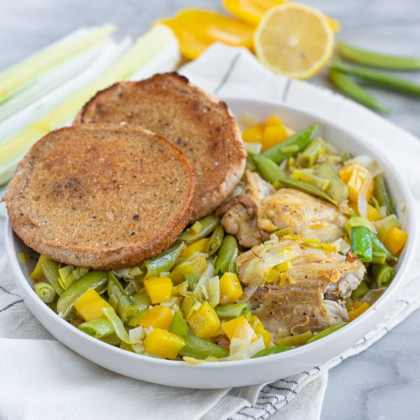

Coriander Chicken Thighs with Leeks, Snap Peas, Peppers & Cumin Toast

Prep Time
35 min
Nutrition (per serving)
628.8 kcalCalories
56.9 gProtein
45.7 gCarbs
24.6 gFat
Full nutrition table
| Calories | 628.8 kcal |
| Total fat | 24.6 g |
| Saturated fat | 4.8 g |
| Trans fat | 0.4 g |
| Cholesterol | 213.2 mg |
| Sodium | 463.1 mg |
| Carbohydrates | 45.7 g |
| Fiber | 8.6 g |
| Sugars | 16 g |
| Protein | 56.9 g |
| Potassium | 1241.1 mg |
| Calcium | 184.7 mg |
| Iron | 8 mg |
| Vitamin A | 245.3 IU |
| Vitamin C | 193.3 mg |
| Vitamin D | 2.3 IU |
Cookware
Ingredients
- 8 fl ozchicken or vegetable broth
- 2 lbchicken thighs, boneless skinless
- 2 clovesgarlic
- 4leeks
- 1lemon
- 2 (8 oz) pkgsugar snap peas
- 4whole grain buns or rolls
- 2yellow bell peppers
- black pepper
- coriander, ground
- cumin, ground
- extra virgin olive oil
- salt
Steps
- Preheat oven to 425°F. Position racks in the upper and lower thirds of the oven.
- Wash and dry the fresh produce.4 leeks
1 lemon
2 yellow bell peppers
2 (8 oz) pkg sugar snap peas - Trim off the root ends and dark green tops of the leeks, leaving only the white and pale green parts. Cut the leeks in half lengthwise and rinse under running water, separating the layers to remove any dirt and grit. Slice crosswise into ¼-inch thick pieces and place in a medium bowl.
- Peel and mince garlic; zest lemon. Add both to the bowl with the leek and set aside. (Reserve lemon for later use.)2 cloves garlic
- Preheat a large ovenproof skillet over medium-high heat.
- While the skillet heats up, pat chicken dry with paper towels and place on a plate; season with salt and pepper on both sides.2 lb chicken thighs, boneless skinless
½ tsp salt
¼ tsp black pepper - Once the skillet is hot, add oil and swirl to coat the bottom; add chicken and cook until golden, about 2 minutes per side. Once golden, transfer to a clean plate and cover with aluminum foil (the chicken will not be cooked all the way through). Reserve skillet (with juices) for the next step.4 tsp extra virgin olive oil
- Return skillet to medium heat, add more oil, and swirl to coat the bottom. Add leek, garlic, lemon zest, and spices; cook, stirring occasionally, until the leek starts to soften, 3-4 minutes. (Reserve bowl for the next step.)4 tsp extra virgin olive oil
2 tsp coriander, ground
1 tsp salt
½ tsp black pepper - Meanwhile, trim, seed, and medium dice bell peppers; cut snap peas in half crosswise. Place both in the reserved bowl.
- When the leek is soft, add bell pepper, snap peas, and broth to the skillet; stir to combine and bring to a simmer over medium-high heat.8 fl oz (1 cup) chicken or vegetable broth
- Once simmering, return chicken to the skillet (along with any accumulated juices) and nestle into the veggies. Place skillet on lower rack of the oven and bake until veggies are tender and chicken is cooked through, about 10 minutes.
- While the chicken is cooking, split buns in half and place on a large baking sheet pan; drizzle with oil and season with spices. Place on upper rack of the oven and toast until golden, about 4 minutes. Remove from oven.4 whole grain buns or rolls
1 tbsp extra virgin olive oil
½ tsp cumin, ground
¼ tsp salt
⅛ tsp black pepper - When the chicken is done, remove from oven and juice reserved lemon over top.
- To serve, divide chicken, veggies, sauce, and toast between plates or bowls. Enjoy!